Snake

Lass die Schlange die Äpfel aufsammeln aber berühre nicht den Rand und verwickle dich nicht, wenn die Schlange länger wird.
| Figuren | 3 |
| Skripte | 13 |
| Variablen | 2 |
Lass die Schlange die Äpfel aufsammeln aber berühre nicht den Rand und verwickle dich nicht, wenn die Schlange länger wird.
| Figuren | 3 |
| Skripte | 13 |
| Variablen | 2 |
Steuere die Schlange, um die Äpfel aufzusammeln. Aber pass auf, dass du nicht den Rand berührst und auch keinen Knoten in die Schlange machst, wenn sie länger wird.
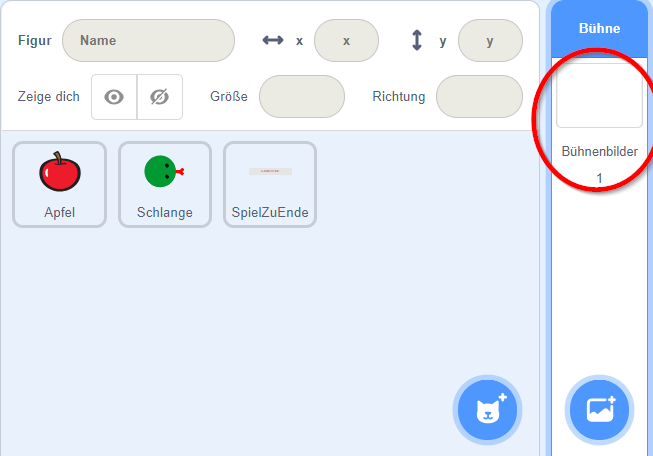 Das Spiel besteht aus drei Figuren: der Schlange, dem Apfel und einer Nachricht, wenn das Spiel zu Ende ist. Für dieses Spiel brauchen wir kein Bühnenbild. Du kannst es einfach weiß lassen. Die Schlange besteht aus zwei Kostümen: Kopf und Körper. Der Kopf und der Körper der Schlange dürfen nicht größer als 20 sein. Nur die Zunge beim Kopf darf das überschreiten. Am besten, du malst zuerst den Körper mit einer Größe von 20, kopierst diesen dann für den Kopf und fügst Augen und eine Zunge hinzu. Beachte auch, dass der Körper eine andere Farbe als der Kopf haben muss.
Schlange Figur downloaden 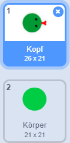
Der Apfel braucht nur ein Kostüm. Damit er von der Schlange nur erwischt wird, wenn diese sich genau über den Apfel befindet, darf auch der Apfel nicht größer als 20 sein. Du kannst den Apfel selber malen, oder du verwendet den Apfel aus der Scratch Figurenbibliothek.
Apfel Figur downloaden 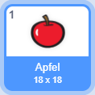
Dann brauchst du noch eine Figur für die Game Over Meldung (Englisch für das Spiel aus aus), die angezeigt wird, wenn der Spieler verloren hat.
SpielZuEnde Figur downloaden 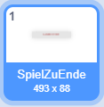
Damit sich die Schlange bewegen kann müssen wir zwei Informationen speichern: die Länge der Schlange und wie lange jeder Teil der Schlange auf einer Position bleibt. Lege dafür zwei Variablen mit den Namen DauerProPosition und Länge an, die für alle Figuren zur Verfügung stehen.
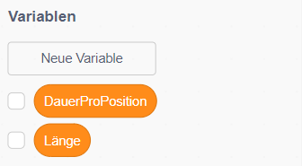
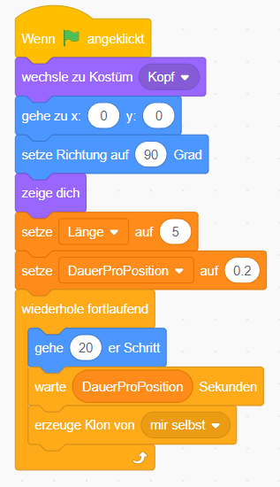
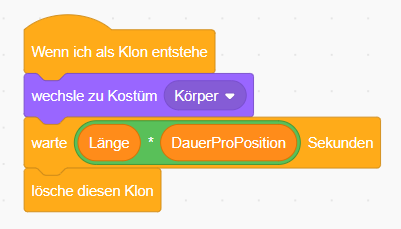
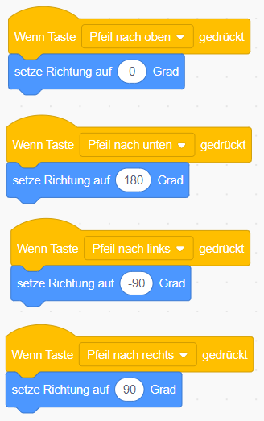
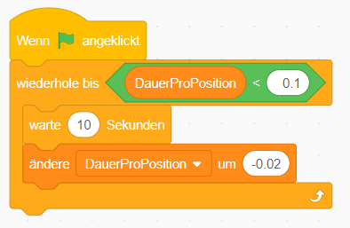
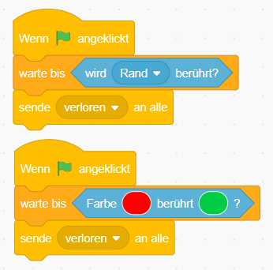
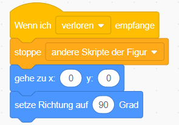
Dann wiederhole fortlaufend folgende Schritte:
Wiederhole das Generieren der Zufallszahlen solange, bis du eine Position findest, an der die Schlange gerade nicht berührt wird.
Dann warte bis der Apfel von der Schlange berührt wird.
Spiele einen Klang ab und mach die Schlange um einen Körperteil länger.
Dann beginne wieder von vorne und suche eine neue Position für den Apfel.
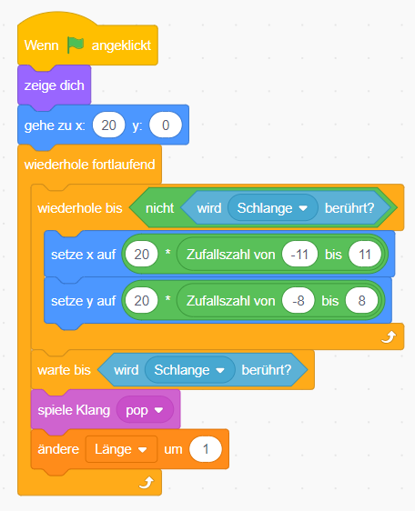
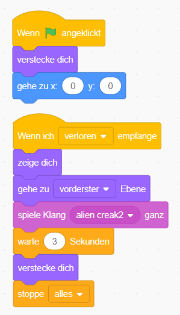
Du kannst das fertige Projekt unter snake.sb3 herunterladen.